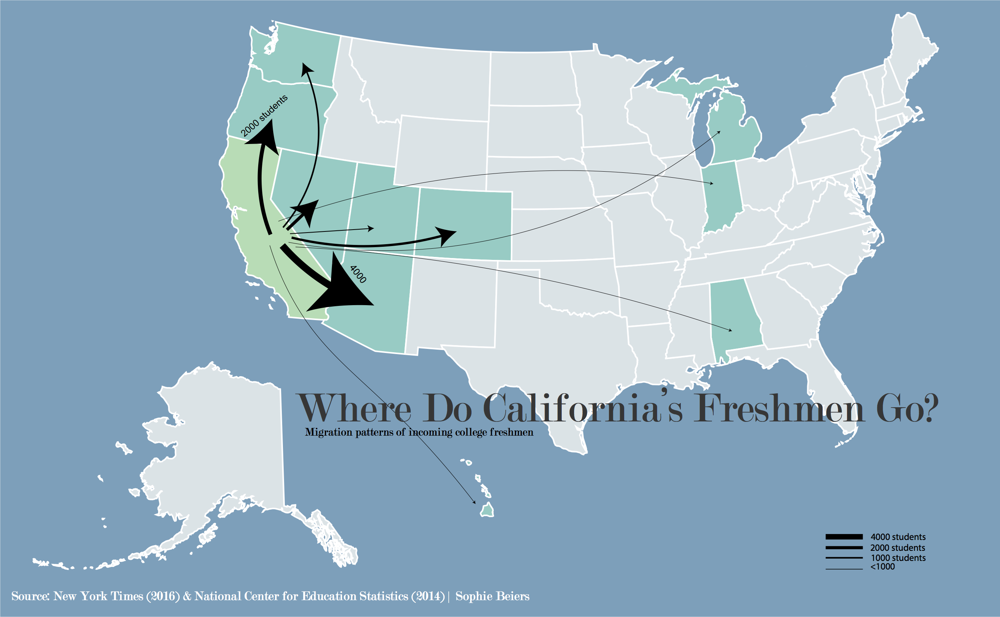

As a native Californian who remained in-state for college, I was intrigued by the NYT's 2016 article regarding where incoming freshmen tend to migrate out-of-state for a public university. The below map was based on data from NCES and visuals from "The Great Out-of-State Migration: Where Students Go."

According to the New York Times and Department of Ed data, freshman migration has almost doubled since 1986. Over 17,000 Californians, in specific, lost their minds (jokes) and went out of state for public school in 2016, while only roughly 4,700 students from other states moved into California. The New York Times cites one of the largest reasons freshmen leave California as simply not making the cut in terms of admission requirements in their home state schools. State schools in Texas, California and Illinois automatically admit top-10 students from the state, leaving those in the bottom 90% to often look elsewhere. The largest group of California-abandoners ended up in Arizona, and plenty left for neighboring states Oregon, Washington and Utah. Fewer made the cross-country trek.
Thicker arrows represent more students. Graphics were made entirely in Illustrator.